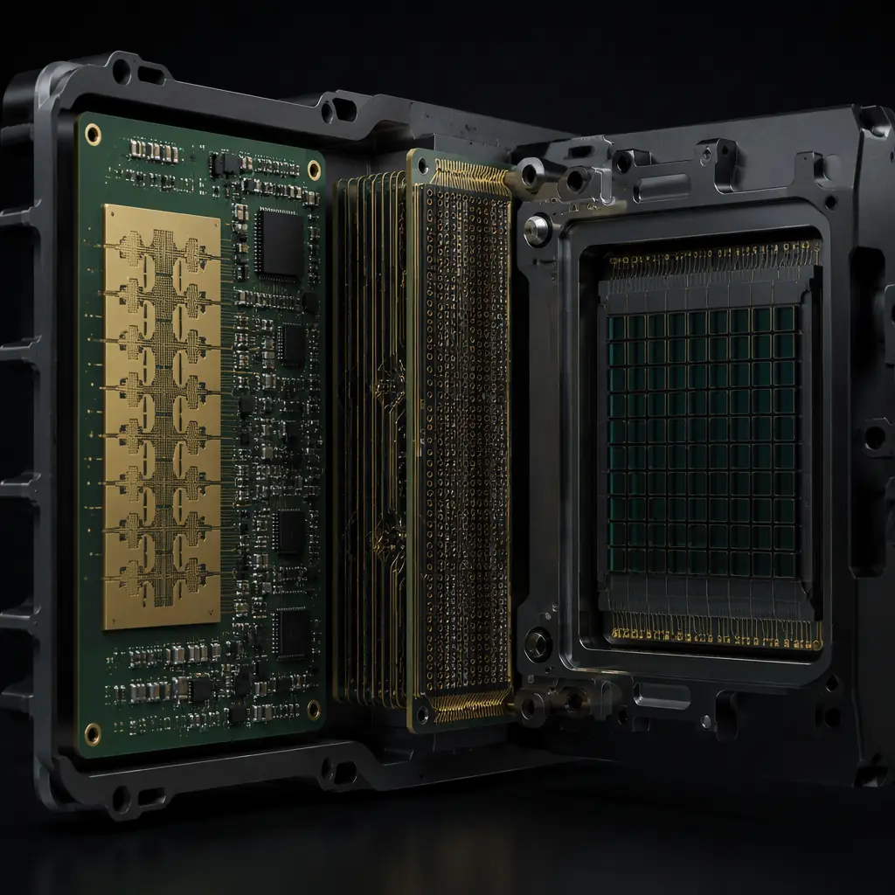
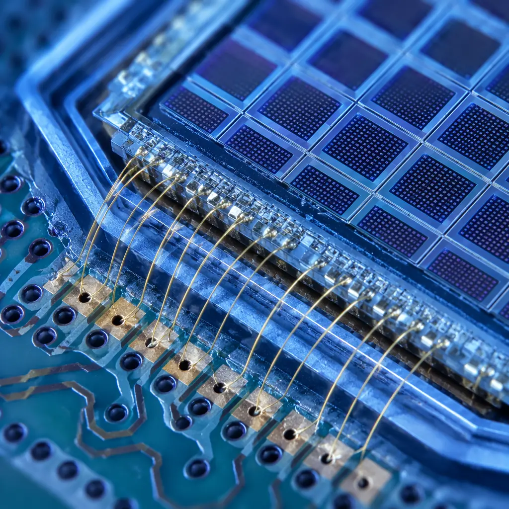

Every modern vehicle rolling off the assembly line in 2026 carries between 8 and 14 ADAS sensor modules. Behind each radar dome, camera housing, and LiDAR unit sits at least one PCB that must maintain signal integrity at 77 GHz while surviving -40°C to +125°C thermal cycling for the vehicle's entire service life. Getting these boards right isn't just about hitting a spec sheet — it's about understanding what happens when a 3/3 mil trace carrying a millimeter-wave signal encounters a microvoid that passed standard AOI but fails under automotive thermal shock.
Huaxing PCBA manufactures ADAS-grade PCBs across 8 SMT lines under IATF 16949 certified quality management — the same standard required by Tier-1 automotive suppliers worldwide. Our facility handles 32-layer boards with impedance control at ±5% tolerance across the full -40°C to +125°C operating range, with 100% automated optical inspection and 4-wire Kelvin testing on every lot. For procurement managers evaluating PCB suppliers for ADAS programs, this guide covers the technical requirements that separate production-ready boards from qualification failures.

Radar Sensor PCB: 24 GHz and 77 GHz Design Requirements
Automotive radar is the workhorse of ADAS — adaptive cruise control, blind-spot detection, and automatic emergency braking all depend on radar PCBs that can transmit and receive millimeter-wave signals with minimal insertion loss. The gap between a functional prototype and a production-grade radar PCB comes down to substrate selection, copper profile control, and layer-to-layer registration tolerance.
Substrate Selection: Rogers RO3003, RO4835, or Isola Astra MT77
Standard FR-4 is unusable at 77 GHz — its dielectric constant (Dk) varies too much with temperature and frequency. Radar PCB substrates require Dk tolerance within ±0.05 across -40°C to +125°C and dissipation factor (Df) below 0.003 at 77 GHz. Rogers RO3003G2 (Dk 3.00 ±0.04) and RO4835 (Dk 3.48) are the industry standards for long-range radar. For cost-sensitive short-range radar (24 GHz), hybrid constructions with Rogers RF layer on FR-4 core layers can reduce material cost by 30-40% while maintaining acceptable performance. See our RF PCB design guide for detailed substrate comparison data.
Copper Surface Roughness: Why 2 μm RMS Matters at 77 GHz
At millimeter-wave frequencies, signal current travels almost entirely within 0.2 μm of the copper surface — the skin effect depth shrinks as frequency increases. Any surface roughness above 2 μm RMS creates additional conductor loss that degrades radar range and resolution. Production radar PCBs must use low-profile (LP) or very-low-profile (VLP) copper foil — standard electrodeposited (ED) copper with 5-8 μm RMS roughness can increase insertion loss by 2-3 dB at 77 GHz, effectively halving the radar's effective detection range.
Impedance Control: ±5% at Operating Temperature
Radar antenna feed lines are typically designed for 50Ω single-ended or 100Ω differential impedance. A 10% impedance mismatch at 77 GHz creates a return loss of only -20 dB in simulation but can degrade to -12 dB after manufacturing tolerances stack up — enough to trigger VSWR faults during module-level testing. Our impedance control process uses TDR verification on every panel, not just coupon sampling, to guarantee ±5% across all operating temperatures. For differential pairs, line width tolerance is held to ±0.5 mil and spacing to ±0.75 mil.
Procurement Insight: When quoting radar PCBs, always specify "controlled impedance with TDR report per panel" rather than just "controlled impedance." The difference is the difference between a statistical process control approach (coupons only) and 100% verification. For ADAS safety-critical applications, per-panel TDR data is increasingly a non-negotiable deliverable in RFQs from Tier-1 suppliers.

LiDAR Receiver & Transmitter PCB: High-Density Optical Sensor Arrays
LiDAR modules present a different set of PCB challenges from radar — instead of millimeter-wave RF constraints, the dominant requirements are extreme interconnect density for photodiode arrays, ultra-low noise analog front-ends, and precise mechanical alignment between the PCB and optical elements. A 128-channel LiDAR receiver board packs 128 analog channels plus digitization and serialization into a board often smaller than a credit card.
HDI Microvia Architecture for Photodiode Fan-Out
LiDAR photodiode arrays use pad pitches as tight as 0.4 mm, requiring laser-drilled microvias (75 μm diameter) with stacked or staggered architecture. A 128-element array needs 256+ microvias for signal and ground within a few square centimeters. Stacked microvias reduce the routing footprint by 40% compared to staggered, but require more careful copper plating control to avoid barrel cracks during thermal cycling. Our HDI PCB technology guide covers the trade-offs between stacked and staggered microvia designs for different reliability requirements.
Analog Front-End: Sub-100 μV Noise Floor Requirements
The transimpedance amplifier (TIA) stage that converts photodiode current to voltage must operate with input-referred noise below 2 pA/√Hz. Achieving this on a production PCB requires: dedicated analog ground planes separated from digital ground with a single-point connection at the ADC, guard rings around high-impedance TIA inputs, and no digital traces crossing the analog section on any layer. One poorly placed via carrying a 50 MHz SPI clock under the TIA section can couple enough noise to degrade the LiDAR's minimum detectable signal by 6-10 dB. See our mixed-signal PCB design guide for grounding and partitioning strategies.
Laser Driver PCB: Managing 40A Peak Currents in Nanosecond Pulses
The laser transmitter side of LiDAR drives VCSEL or edge-emitting laser arrays with current pulses reaching 30-40A in 5-10 ns rise times. These di/dt values create ground bounce and electromagnetic interference that can couple into the sensitive receiver side if not managed. The laser driver PCB requires: heavy copper traces (4-6 oz) for the main current path, low-ESL capacitor banks within 2 mm of the laser anode, and a dedicated power plane with stitching vias every 2 mm. For high-current PCB design beyond typical limits, consult our heavy copper PCB guide.
Camera Module PCB: High-Speed Serial Links & Thermal Management
ADAS cameras have evolved from simple NTSC analog outputs to multi-megapixel digital imagers streaming raw video over GMSL2 or FPD-Link III serializers at 6 Gbps per lane. The PCB inside an automotive camera module must handle this high-speed serial data while fitting into a housing often no larger than 25 × 25 mm — and dissipating heat from an image sensor and serializer that together generate 2-4W in a sealed enclosure.
GMSL2/FPD-Link III Serial Links: 6 Gbps Differential Pair Routing
A 6 Gbps serial link requires intra-pair skew below 2 ps — that translates to a length mismatch tolerance of less than 0.3 mm on standard FR-4 substrates after accounting for weave effect. Production camera PCBs should specify spread-glass or low-Dk laminate in the serializer routing layer to minimize glass-weave skew, a phenomenon that can cause 5-15 ps of deterministic jitter on longer differential pairs. The serializer output pair should be routed on a single layer with no vias between the chip and the FAKRA/HSD connector — each via adds 0.5-1.0 dB of insertion loss at 3 GHz (the Nyquist frequency for 6 Gbps NRZ).
Thermal Management in Sealed Camera Enclosures
Automotive camera modules are IP69K sealed — no airflow, no ventilation. The image sensor alone dissipates 1-2W and the serializer adds another 1-1.5W. In direct sunlight on a 40°C day, the internal temperature can reach 95-105°C. The PCB design must incorporate: thermal vias under the image sensor BGA (0.3 mm diameter, 1.0 mm pitch, filled and capped), a copper coin or metal-core layer for the serializer, and high-Tg laminate (Tg ≥ 170°C) to prevent delamination under sustained thermal load. For comprehensive thermal design strategies, see our PCB thermal management guide.
Flex and Rigid-Flex for Multi-Board Camera Stacks
Many ADAS camera modules use a stacked PCB architecture: a rigid image sensor board connected to a rigid serializer/connector board via a short flex section that folds around the optical assembly. This requires rigid-flex PCB manufacturing with tight bend radius control — typically 2-3 mm minimum bend radius for a 2-layer flex with 0.5 oz copper and polyimide substrate. The flex section must survive 100,000+ dynamic bend cycles if the camera includes an auto-focus or optical stabilization mechanism.
Sensor Fusion ECU: The Central Compute Platform
The sensor fusion ECU ingests raw data from 8-14 sensor modules simultaneously — radar point clouds, LiDAR voxel maps, and camera video streams — and runs CNN-based perception algorithms in real time. These boards sit at the intersection of high-speed digital, power delivery, and automotive qualification, often using processors like the Mobileye EyeQ6 or NVIDIA Orin with 200+ TOPS of AI compute.
The fusion ECU PCB is typically a 16-24 layer HDI board with: multiple 10/25 Gbps SerDes lanes connecting to each sensor module, LPDDR5 memory interfaces running at 6400 MT/s, and a power delivery network that must supply 50-80W to the SoC while keeping voltage ripple below ±2% across all load transients. For high-layer-count PCB stackup design, refer to our PCB stackup design guide.
Qualification Reality Check: A sensor fusion ECU PCB must pass the same AEC-Q100 and ISO 16750 environmental stress tests as the ICs mounted on it — including 1,000 thermal cycles (-40°C to +125°C), 85°C/85% RH biased humidity for 1,000 hours, and mechanical shock at 50g. Boards that pass electrical test at room temperature but delaminate or develop CAF (conductive anodic filament) failures during environmental stress are the #1 cause of ADAS program delays at the Tier-1 level.
Automotive Qualification: What Your PCB Supplier Must Demonstrate
An ADAS PCB isn't qualified just because the supplier claims automotive capability. Procurement managers should verify the following before placing a production order:
| Requirement | Standard | What to Verify |
|---|---|---|
| Quality system | IATF 16949:2016 | Valid certificate, not expired, scope includes PCB manufacturing |
| cleanliness | IPC-6012 Class 3 + ionic contamination <1.56 μg/cm² NaCl equivalent | Per-lot ROSE test data, not just annual qualification coupon |
| CAF resistance | IPC-TM-650 2.6.25 | 500-hour test at 85°C/85% RH with 100V DC bias, resistance >100 MΩ |
| Thermal reliability | IPC-TM-650 2.6.7 (IST) or 2.6.27 (thermal shock) | Minimum 6 cycles of IST testing at 150°C or 100 cycles air-to-air thermal shock (-40/+125°C) |
| Microsection | IPC-6012 Class 3 Table 3-2 | Per-lot cross-section on production panel, not just qualification sample |
| Impedance TDR | IPC-TM-650 2.5.5.7 | ±5% across full operating temperature range, measured on production panel coupons |
For a comprehensive overview of PCB quality standards, including the differences between IPC-A-600, IPC-6012, and IPC-A-610, read our IPC standards comparison. For automotive-specific certification requirements beyond what's covered here, see our automotive PCB requirements guide.
Selecting a PCB Supplier for ADAS Programs: 5 Decision Criteria
After the technical requirements are defined, procurement teams need a structured way to evaluate potential PCB suppliers. Based on lessons learned from multiple Tier-1 supplier transitions, here are the criteria that separate suppliers who deliver production-ready boards from those who pass the audit but fail the first PPAP submission.
In-House RF Testing Capability
Suppliers who outsource impedance TDR or VNA measurements to a third-party lab add 3-5 days to the NPI cycle and lose the ability to correlate process parameters with RF performance in real time. For ADAS radar and high-speed camera serial links, insist on in-house TDR and VNA equipment with documented correlation to customer reference measurements. Our facility performs 100% impedance TDR verification on every production panel.
Proven High-Frequency Material Inventory Management
Rogers and Isola high-frequency laminates have shelf lives — typically 6-12 months from date of manufacture under controlled temperature and humidity storage. A supplier who buys material per-order rather than maintaining strategic inventory will cause lead time spikes when laminate lead times extend. Ask potential suppliers to show their Rogers material inventory log with lot traceability back to the manufacturer date code. For laminate selection guidance, see our PCB materials selection guide.
PPAP Experience: Not All Level 3 Submissions Are Equal
A meaningful PPAP Level 3 submission for an ADAS PCB includes: dimensional report with CMM data on every critical feature (not just the 3 easiest-to-measure dimensions), material certificates with actual test values (not just "conforms to specification"), full TDR data for controlled-impedance traces on the production panel (not a separate test coupon panel), and microsection photographs with measurement annotations. Suppliers who have never completed a PPAP for a Tier-1 automotive customer often underestimate the documentation depth required. Our cross-section report interpretation guide helps buyers understand what a proper microsection report should contain.
Cleanliness Control Beyond Visual Inspection
ADAS PCBs operating in under-hood or external vehicle locations face condensation, road salt, and temperature cycling that accelerate electrochemical migration if ionic contamination remains on the board. The supplier's standard process should include ROSE ( Resistivity of Solvent Extract) testing at <1.56 μg/cm² NaCl equivalent per IPC-6012, not just an annual qualification test. Per-lot cleanliness data should be part of the standard Certificate of Analysis, not an optional add-on.
Conformal Coating Capability for Exterior-Mounted Sensors
Radar and LiDAR modules mounted behind the front bumper or grille are exposed to water spray, salt, and de-icing chemicals. The PCB assembly must include conformal coating — typically acrylic or silicone-based — applied at 25-75 μm thickness with documented coverage verification (UV inspection). Suppliers without in-house conformal coating must subcontract this step, adding cost, lead time, and a quality handoff point that often fails during production ramp.
From NPI to Production: Scaling ADAS PCB Manufacturing
The transition from 50-unit NPI builds to 50,000-unit annual production volumes is where many ADAS PCB programs encounter delays. Three areas demand early attention from procurement teams planning volume ramp:
Panel Utilization Optimization — A radar PCB that fits 48-up on an 18×24" panel during NPI may only fit 36-up when production fiducials, tooling holes, and test coupon areas are added. This 25% drop in panel utilization directly increases unit cost — but discovering it after tooling is fabricated creates a 4-6 week delay. Engage your supplier's CAM engineering team during the prototyping phase for panelization optimization. Our panelization cost optimization guide covers strategies to maximize yield per panel.
Test Strategy Alignment — NPI builds often use flying probe testing for flexibility, but volume production typically transitions to bed-of-nails fixtures for throughput. The test point layout must be designed for both methods from the start — adding test points after the design is frozen requires a board re-spin. See our design for testability guide for test point placement rules that support both flying probe and ICT.
Second Source Qualification — Automotive OEMs increasingly require a qualified second-source PCB supplier before SOP (Start of Production). The qualification timeline — from audit to PPAP approval — typically takes 16-20 weeks. Procuring teams should initiate second-source qualification at least 6 months before the planned SOP date, not after the primary supplier demonstrates consistent production quality. For supplier transition strategies, see our PCB supplier transition guide.
Getting Started with ADAS PCB Manufacturing
ADAS and autonomous driving PCB requirements span RF design, HDI fabrication, thermal management, and automotive qualification — a combination that demands a supplier with both technical depth and production process discipline. The key takeaway for procurement managers: the most expensive PCB is not the one with the highest unit price but the one that passes electrical test at the factory and fails during thermal cycling qualification at the module level, triggering a 12-week re-spin and delaying your SOP by a full quarter.
At Huaxing PCBA, we manufacture ADAS-grade PCBs under IATF 16949 certified quality management with in-house impedance TDR, microsection analysis, and ionic cleanliness testing on every production lot. Our engineering team has supported PPAP Level 3 submissions for Tier-1 automotive suppliers across radar, LiDAR, and camera module programs. Read our automotive PCB requirements guide for the full qualification framework or contact our engineering team with your Gerber files and stackup requirements for a same-day feasibility review.